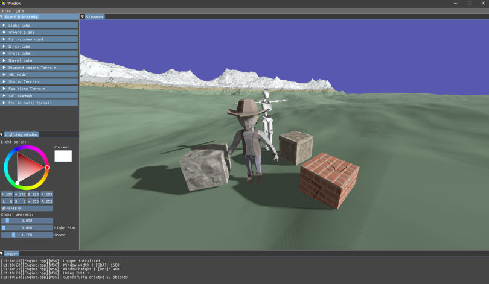
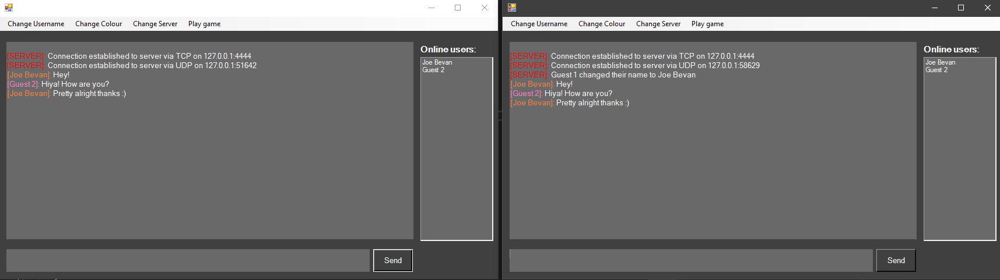

This was one of the last modules I worked on at University. It taught me alot about shaders and how alot of post processing effects are achieved. This can be seen by seen by the shadows in the scene. Along side this, the engine included dynamic several terrain generation algorithms, like Diamond-square, and static terrain generation. In addition, it included classic texure mapping techniques such as specular maps, normal maps, and parallax maps.
This module covered how many physics engines are developed and covered concepts like buoyancy, particle systems, and rigidbodys. The buoyancy system can be seen in action on the cube on the far right.

In my second year of university I was taught how to write networking code. This module covered concepts like packets, mutual exclusion, and race conditions along with building a server-client chat application. I expanded upon this by creating a base for a multiplayer game where clients could move around a scene and their position would update in real-time to other clients.
One of the optional modules I picked in my second year was artificial intelligence in games. For this module I was tasked with implemening several popular steering behaviors such as seek, flee, pursuit, evasion and obstacle avoidance. In addition, I also implemented A* Pathfinding that can been seen in action in the video above.
This was my final year project that I did in college. This was an assigment that required me to create a game of any genre along with all the required documentation such as a design document. The only restrictions to this project was it had to be 3D, the game contained animations for the player and was developed using Unreal Engine 4.
This was some of my earlier college work. I learnt alot about Unreal Engine 4 development and their blueprint system. I started to learn the basics of 3D modeling using 3DS max as I created the glass bottles seen in the main menu, I also created the benches seen in level 3 along with some other misc models throughout the game.
Over the summer of 2020 I decided to create a discord bot using discord.js as a framework. Currently the bot can do the following:
I plan on continuing to work on this bot, adding features like several moderation tools (kicking / banning / deleting messages).
I recreated the well-known simulation called 'Game of Life' by British mathematician, John Conway. I made this when I was still quite new to C++ so the rules of the game seemed simple enough to attempt creating it in SDL 2.0.
Those rules being:
When I was younger, I was really interested in AI and wanted to give it a go making my own AI using A*. The AI is set up to go from the top left corner to the bottom right. Note: the AI has a 50ms delay each move to make it easier to see its steps